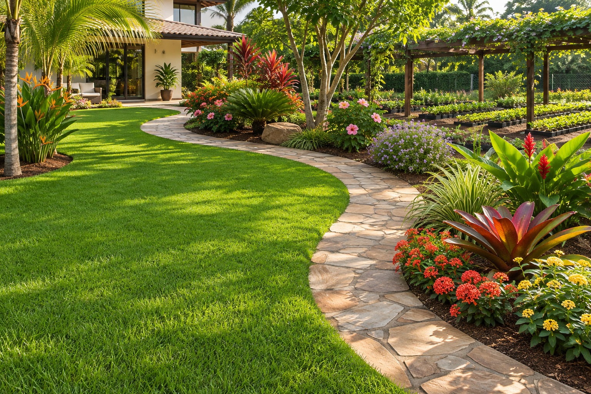

JARDINS, GRAMADOS E PLANTIOO verde transforma
O verde transforma
cada espaço.
Imagens ilustrativas para apresentar os serviços do seu negócio.

GRAMAS POR METRO QUADRADOSeu novo gramado
Seu novo gramado
começa por aqui.
Escolha o tipo de grama e informe quantos metros quadrados você precisa para montar um pedido de orçamento.
- Grama Esmeralda
- Grama São Carlos
- Grama Batatais
Esse pode ser o começo
do seu próximo site.
Esta página é uma demonstração de design. Os botões abaixo levam à Jhonny Sites para conversar sobre o seu projeto.
Quero um site nesse estilo